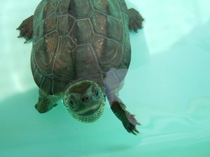
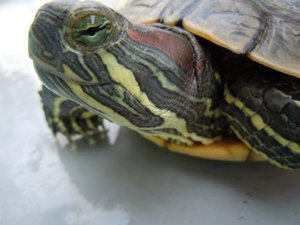

Home
Basic info
- Real Name: Horikawa Yuto
- Internet Name: Hyrodium
History
- 2021/05-20xx/xx Visiting Researcher, Osaka University
- 2020/01-20xx/xx Rist
- 2019/04-2019/12 DMG MORI
- 2017/04-2019/03 Master course, Osaka University
- 2015/04-2017/03 Undergraduate course, Osaka University
- 2010/04-2015/03 Osaka Prefecture University College of Technology
Secret info①
I have two pets: a Mauremys reevesii and a Trachemys scripta.
 
Secret info②
This is my name card.